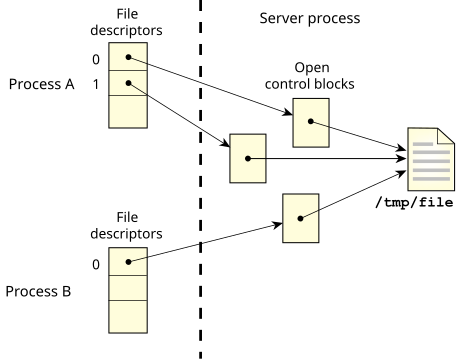
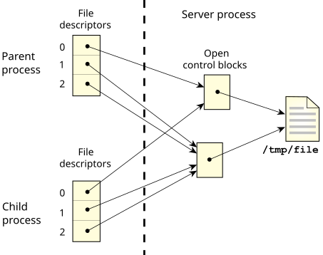

The open control block (OCB) contains active information about the open resource.
For example, the filesystem keeps the current seek point within the file here. Each open() creates a new OCB. Therefore, if a process opens the same file twice, any calls to lseek() using one FD will not affect the seek point of the other FD. The same is true for different processes opening the same file.

Several file descriptors in one or more processes can refer to the same OCB. This is accomplished by two means:
When several FDs refer to the same OCB, then any change in the state of the OCB is immediately seen by all processes that have file descriptors linked to the same OCB.
For example, if one process uses the lseek() function to change the position of the seek point, then reading or writing takes place from the new position no matter which linked file descriptor is used.

You can prevent a file descriptor from being inherited when you posix_spawn(), spawn(), or exec*() by calling the fcntl() function and setting the FD_CLOEXEC flag.